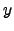
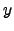
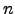
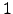
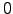
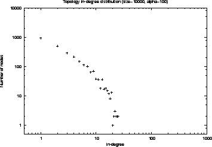
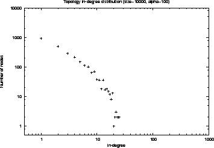

Gian Paolo Jesi (jesi@cs.unibo.it)
This tutorial describes how to build a new PEERSIM (PEERSIM project page: http://sourceforge.net/projects/peersim) topology generator. In order to understand this tutorial, the reader is encouraged to study the first PEERSIM tutorial (http://peersim. sourceforge.net/tutorial1/tutorial1.pdf) to learn about the basic concepts that will not be discussed any further in this document.
The aim of this tutorial is to be as practical as possible; we encourage the reader to experiment further. The full source code discussed in this document is available in the PEERSIM release in the peersim.example.hot class package, and the latest version via anonymous cvs from the project.
In a large-scale an dynamic P2P system nodes cannot have complete information about the entire network. Instead, all nodes can possibly have only a few neighbors, that is, peers that the ``know about''. These ``knows about'' relations define a network that is called overlay network, and that is a fundamental concept of P2P systems.
Many P2P protocols are either about building a specific overlay network or rely on a fixed overlay network that are provided by other services or that are given by some constraints. In all cases it is very important to be able to experiment with protocols over many different network topologies. PEERSIM already contain many topologies to experiment with, in the peersim.dynamics.Wire* classes, readily applicable to initialize linkable protocols. In this document we give a brief illustration of how to build a custom generator.
In this document, we have chosen to code a particular topology generator
to build Internet-like tree topologies. The building process is based
on a specific, location dependent
preferential attachment approach. The wiring rule applied is
quite simple and takes into account geometric and network constraints
to better mimic real world networks. Preferential attachment
is tuned by the parameter  that amplifies or reduces the
influence of the geometric location.
that amplifies or reduces the
influence of the geometric location.
The rule strategy is the following: we consider a unit square,
and we place  in the middle, that is,
in the middle, that is,  .
This node is called the root. Let denote the number of hops to
the root.
For each
.
This node is called the root. Let denote the number of hops to
the root.
For each
 , we select a point
, we select a point  in the unit square at
random, and we connect it to an already existing node
in the unit square at
random, and we connect it to an already existing node  that minimizes the following formula:
that minimizes the following formula:
where dist() is the Euclidean distance and  is a weight
parameter.
Of course,
.
This way we obtain a tree rooted in
is a weight
parameter.
Of course,
.
This way we obtain a tree rooted in  . This topology implies that
every node (except the root) has an out-degree of exactly one link.
To get further details about this model, we suggest the following
readings:
. This topology implies that
every node (except the root) has an out-degree of exactly one link.
To get further details about this model, we suggest the following
readings:
Our aim is to write PEERSIM components able to produce the
desired topology according to the  parameter, and
to analyze it as well.
The topology could be build gradually during a simulation, or
at once, in a single step. We opt for the latter approach.
In order to build the desired topology, we will need the following
components (note that other design decisions could be taken: we selected
the following way):
parameter, and
to analyze it as well.
The topology could be build gradually during a simulation, or
at once, in a single step. We opt for the latter approach.
In order to build the desired topology, we will need the following
components (note that other design decisions could be taken: we selected
the following way):
As we will see in next sections, some of the classes we listed are PEERSIM standard components that can readily used, due to the generic Linkable interface, that provides an abstraction to deal with any topologies in a modular fashion.
As we stated so far, the protocol code is minimal:
package example.hot;
import peersim.core.Protocol;
public class InetCoordinates implements Protocol {
// ------------------------------------------------------------------------
// Fields
// ------------------------------------------------------------------------
/** 2d coordinates components. */
private double x, y;
// ------------------------------------------------------------------------
// Constructor
// ------------------------------------------------------------------------
public InetCoordinates(String prefix) {
/* Un-initialized coordinates defaults to -1. */
x = y = -1;
}
public Object clone() {
InetCoordinates inp = null;
try {
inp = (InetCoordinates) super.clone();
} catch (CloneNotSupportedException e) {
} // never happens
return inp;
}
public double getX() {
return x;
}
public void setX(double x) {
this.x = x;
}
public double getY() {
return y;
}
public void setY(double y) {
this.y = y;
}
}
This class stores only the coordinates, the links will be stored in another (arbitrary) protocol the implements the Linkable interface.
The clone() method must be redefined simply to catch and swallow the exception (that is never thrown), since otherwise no deep cloning is needed (we have only primitive types).
The coordinate components are not public and can be accessed by their getter/setter methods. this is important because that way one can use the peersim.vector package to initialize coordinates in a completely flexible way. In this document we do not use that package.
package example.hot;
import peersim.config.Configuration;
import peersim.core.CommonState;
import peersim.core.Control;
import peersim.core.Network;
import peersim.core.Node;
public class InetInitializer implements Control {
// ------------------------------------------------------------------------
// Parameters
// ------------------------------------------------------------------------
private static final String PAR_PROT = "protocol";
// ------------------------------------------------------------------------
// Fields
// ------------------------------------------------------------------------
/** Protocol identifier, obtained from config property {@link #PAR_PROT}. */
private static int pid;
// ------------------------------------------------------------------------
// Constructor
// ------------------------------------------------------------------------
public InetInitializer(String prefix) {
pid = Configuration.getPid(prefix + "." + PAR_PROT);
}
// ------------------------------------------------------------------------
// Methods
// ------------------------------------------------------------------------
/**
* Initialize the node coordinates. The first node in the {@link Network} is
* the root node by default and it is located in the middle (the center of
* the square) of the surface area.
*/
public boolean execute() {
// Set the root: the index 0 node by default.
Node n = Network.get(0);
InetCoordinates prot = (InetCoordinates) n
.getProtocol(pid);
prot.setX(0.5);
prot.setY(0.5);
// Set coordinates x,y
for (int i = 1; i < Network.size(); i++) {
n = Network.get(i);
prot = (InetCoordinates) n.getProtocol(pid);
prot.setX(CommonState.r.nextDouble());
prot.setY(CommonState.r.nextDouble());
}
return false;
}
}
The initialization class has to implement the Control interface and its only method: execute(). The constructor reads the only parameter (protocol) from the configuration file. It declares the protocol holding the coordinates.
The class is very simple, it
generates uniform random coordinates ( and ).
The only exception is the root node that, by
default, is the node with index 0. Its coordinate is fixed to be
and ).
The only exception is the root node that, by
default, is the node with index 0. Its coordinate is fixed to be  .
.
To generate random numbers, the static field r of CommonState MUST is used at all times, because that way the experiment are guaranteed to be reproducible.
The wiring class extends a standard PEERSIM component: peersim.dynamics.WireGraph. It implements Control and provides generic functionality for dealing with topologies, providing a graph interface. The wiring logic has to be in the wire() method that is called by the superclass. By default, the wiring process considers the index 0 node as the root.
The class has to read from the configuration file both  (alpha in the configuration file) and the coordinate
container protocol identifier (coord_protocol in the configuration
file). This
is done in the class constructor. The other parameter, protocol
is inherited from the superclass: it is the protocol that implements
the Linkable interface.
(alpha in the configuration file) and the coordinate
container protocol identifier (coord_protocol in the configuration
file). This
is done in the class constructor. The other parameter, protocol
is inherited from the superclass: it is the protocol that implements
the Linkable interface.
package example.hot;
import peersim.config.Configuration;
import peersim.core.Linkable;
import peersim.core.Network;
import peersim.core.Node;
import peersim.dynamics.WireGraph;
import peersim.graph.Graph;
public class WireInetTopology extends WireGraph {
// ------------------------------------------------------------------------
// Parameters
// ------------------------------------------------------------------------
private static final String PAR_ALPHA = "alpha";
private static final String PAR_COORDINATES_PROT = "coord_protocol";
// --------------------------------------------------------------------------
// Fields
// --------------------------------------------------------------------------
/* A parameter that affects the distance importance. */
private final double alpha;
/** Coordinate protocol pid. */
private final int coordPid;
// --------------------------------------------------------------------------
// Initialization
// --------------------------------------------------------------------------
public WireInetTopology(String prefix) {
super(prefix);
alpha = Configuration.getDouble(prefix + "." + PAR_ALPHA, 0.5);
coordPid = Configuration.getPid(prefix + "." + PAR_COORDINATES_PROT);
}
/**
* Performs the actual wiring.
* @param g
* a {@link peersim.graph.Graph} interface object to work on.
*/
public void wire(Graph g) {
/** Contains the distance in hops from the root node for each node. */
int[] hops = new int[Network.size()];
// connect all the nodes other than roots
for (int i = 1; i < Network.size(); ++i) {
Node n = (Node) g.getNode(i);
// Look for a suitable parent node between those allready part of
// the overlay topology: alias FIND THE MINIMUM!
// Node candidate = null;
int candidate_index = 0;
double min = Double.POSITIVE_INFINITY;
for (int j = 0; j < i; j++) {
Node parent = (Node) g.getNode(j);
double jHopDistance = hops[j];
double value = jHopDistance
+ (alpha * distance(n, parent, coordPid));
if (value < min) {
// candidate = parent; // best parent node to connect to
min = value;
candidate_index = j;
}
}
hops[i] = hops[candidate_index] + 1;
g.setEdge(i, candidate_index);
}
}
private static double distance(Node new_node, Node old_node, int coordPid) {
double x1 = ((InetCoordinates) new_node.getProtocol(coordPid))
.getX();
double x2 = ((InetCoordinates) old_node.getProtocol(coordPid))
.getX();
double y1 = ((InetCoordinates) new_node.getProtocol(coordPid))
.getY();
double y2 = ((InetCoordinates) old_node.getProtocol(coordPid))
.getY();
if (x1 == -1 || x2 == -1 || y1 == -1 || y2 == -1)
// NOTE: in release 1.0 the line above incorrectly contains
// |-s instead of ||. Use latest CVS version, or fix it by hand.
throw new RuntimeException(
"Found un-initialized coordinate. Use e.g.,\
InetInitializer class in the config file.");
return Math.sqrt((x1 - x2) * (x1 - x2) + (y1 - y2) * (y1 - y2));
}
}
Some of the observer tasks mentioned in Section 3 can be performed by standard PEERSIM components available in the distribution.
For example, to compute statistics of the degree distribution, the user can use peersim.reports.DegreeStats. To test the network robustness, peersim.reports.RandRemoval can be used: it prints statistics about the number of generated clusters and their size, as a function of the number of randomly removed nodes.
However, to dump the topology to a file in a plottable form, we need to write our own observer: InetObserver implementing the Control interface and the corresponding execute() method. We extend persim.reports.GraphObserver. This template class gives us useful functionality to simplify dealing with the observation of graphs.
The constructor takes care of reading the parameters from the configuration file. The protocol parameter refers to the protocol identifier holding the ``who knows whom'' relation (it must be a Linkable protocol). It is inherited by the superclass.
The other parameters, coord_protocol and file_base,
correspond to the coordinate container protocol
name and to the filename prefix to be used.
The final filename generated by
the program is ``
In the execute() method we MUST call updateGraph() (a
GraphObserver protected method) in order to check if some
change has occurred on the actual graph.
The scope of this mechanism is to save the time of constructing the
graph if many observers are run on the same graph. Time savings can be very
significant if the undirected version of the same graph is observed by
many observers.
In addition, note that in execute() method the IO library functions
used may throw some exceptions. Any
exceptions are caught, and re-thrown as runtime exceptions, that
result in the abortion of the simulation run.
The static utility method graphToFile() writes to disk the
actual topology. For each node
, the
This format is suitable for plotting with GnuPlot.
Please note that the loop starts from index , not from ;
this is due to the fact that node 0 is the root and has no outgoing
connections.
In order to make the model run, a PEERSIM configuration file is
needed.
It produces a 10000 node overlay network with the parameters listed in
the init.0 section.
The presented figures show the produced topology and highlight the
role of
As stated in Section 4.4, the DegreeStats standard
component can be used to collect degree statistics. However, it should
be used carefully. By default in PEERSIM,
the ``degree'' is the out-degree, while we are interested in the
in-degree.
So, how
can we inspect the in-degree? First we need
to consider the graph as undirected (undir
parameter) and we choose the frequency statistics (freq
parameter) in order to produce our plots. The observer will
print something like:
The first column corresponds to the degree, while the second to the
number of nodes having that degree. We know for sure that for each node, apart from the
root, there is only one out-link, and we also know that all links are
strictly uni-directional. Thus to extract the in-degree
we simply need to subtract one from the first column.
This document was generated using the
LaTeX2HTML translator Version 2002-2-1 (1.70)
Copyright © 1993, 1994, 1995, 1996,
Nikos Drakos,
Computer Based Learning Unit, University of Leeds.
The command line arguments were:
The translation was initiated by Mark Jelasity on 2006-04-28
package example.hot;
import java.io.FileOutputStream;
import java.io.IOException;
import java.io.PrintStream;
import peersim.config.Configuration;
import peersim.core.Node;
import peersim.graph.Graph;
import peersim.reports.GraphObserver;
import peersim.util.FileNameGenerator;
public class InetObserver extends GraphObserver {
// ------------------------------------------------------------------------
// Parameters
// ------------------------------------------------------------------------
private static final String PAR_FILENAME_BASE = "file_base";
private static final String PAR_COORDINATES_PROT = "coord_protocol";
// ------------------------------------------------------------------------
// Fields
// ------------------------------------------------------------------------
private final String graph_filename;
private final FileNameGenerator fng;
private final int coordPid;
// ------------------------------------------------------------------------
// Constructor
// ------------------------------------------------------------------------
public InetObserver(String prefix) {
super(prefix);
coordPid = Configuration.getPid(prefix + "." + PAR_COORDINATES_PROT);
graph_filename = Configuration.getString(prefix + "."
+ PAR_FILENAME_BASE, "graph_dump");
fng = new FileNameGenerator(graph_filename, ".dat");
}
// Control interface method.
public boolean execute() {
try {
updateGraph();
System.out.print(name + ": ");
// initialize output streams
String fname = fng.nextCounterName();
FileOutputStream fos = new FileOutputStream(fname);
System.out.println("Writing to file " + fname);
PrintStream pstr = new PrintStream(fos);
// dump topology:
graphToFile(g, pstr, coordPid);
fos.close();
} catch (IOException e) {
throw new RuntimeException(e);
}
return false;
}
private static void graphToFile(Graph g, PrintStream ps, int coordPid) {
for (int i = 1; i < g.size(); i++) {
Node current = (Node) g.getNode(i);
double x_to = ((InetCoordinates) current
.getProtocol(coordPid)).getX();
double y_to = ((InetCoordinates) current
.getProtocol(coordPid)).getY();
for (int index : g.getNeighbours(i)) {
Node n = (Node) g.getNode(index);
double x_from = ((InetCoordinates) n
.getProtocol(coordPid)).getX();
double y_from = ((InetCoordinates) n
.getProtocol(coordPid)).getY();
ps.println(x_from + " " + y_from);
ps.println(x_to + " " + y_to);
ps.println();
}
}
}
}
 and coordinates are collected and then for each
neighbor
and coordinates are collected and then for each
neighbor  of node the coordinates are written in the following
format:
of node the coordinates are written in the following
format:
n.neighbor(i).x n.neighbor(i).y \newline
n.x n.y \newline
\newline}
5 Experiments
# Complex Network file:
#random.seed 1234567890
simulation.cycles 1
network.size 10000
protocol.link IdleProtocol
protocol.coord example.hot.InetCoordinates
init.0 example.hot.InetInitializer
init.0.protocol coord
init.1 example.hot.WireInetTopology
init.1.protocol link #the linkable to be wired
init.1.coord_protocol coord
init.1.alpha 4
control.io example.hot.InetObserver
control.io.protocol link
control.io.coord_protocol coord
control.io.file_base graph
control.degree DegreeStats
control.degree.protocol link
control.degree.undir
control.degree.method freq
include.control io degree
 . In fact, it affects the clustering behavior of
the system and it is tightly correlated to the size of the network. If
. In fact, it affects the clustering behavior of
the system and it is tightly correlated to the size of the network. If
 is lower than
, the topology becomes more and more
clustered; with extremely low
is lower than
, the topology becomes more and more
clustered; with extremely low  ,
the topology becomes a star. On the other end, if
,
the topology becomes a star. On the other end, if  is grater than
, the topology tends to be random and not clustered at all.
is grater than
, the topology tends to be random and not clustered at all.
1 9838
2 38
3 19
4 14
5 7
6 7
7 7
8 4
9 3
10 3
11 1
12 5
...
...
543 1
566 1
620 1
653 1
2153 1
About this document ...
PeerSim HOWTO:
Build a topology generator for PeerSim 1.0
Copyright © 1997, 1998, 1999,
Ross Moore,
Mathematics Department, Macquarie University, Sydney.
latex2html -t 'Peersim HOWTO 2' -split 0 -nonavigation -noaddress -show_section_numbers -t 'Peersim HOWTO 2' tutorial2.tex
![\includegraphics[width=8cm]{pic_alfa4}](img17.png)
![\includegraphics[width=8cm]{pic_alfa100}](img21.png) 
